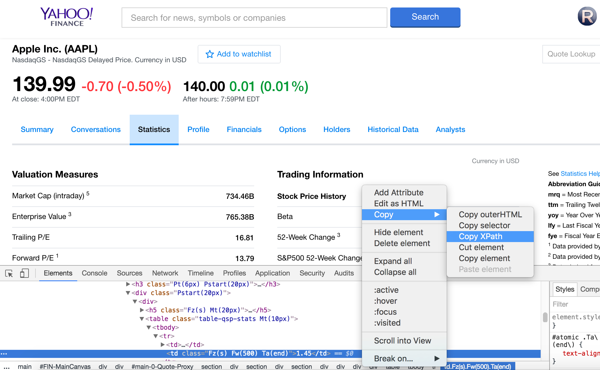

In my previous post, I described how to create data structures for scraping stock market data from the web, using Barron's as an example. Since the data we wanted to scrape from Barron's website was fully rendered in HTML, we could simply use BeautifulSoup on its own to extract the required content. However, BeautifulSoup alone will not work if the content is embedded in javascript. For this we need to use PhantomJS and Selenium.
My primary motivation for this tutorial is that it took me quite a bit of time to figure out how to do this (seemingly) simple task: scraping javascript content using Python. The documentation for Selenium and PhantomJS seemed a bit non-intuitive and difficult to grasp at first. Once I was able to figure out how to do this task, I envisioned creating a sort of step-by-step "cheat sheet" that would enable others to pick this up relatively quickly, without having to bury themselves in a web of countless Google searches like I did.
For this small project, it is advisable to create a virtual environment so that we can keep Selenium and PhantomJS packaged locally with this project. The steps are shown below:
Now, let's install Selenium and PhantomJS using Brew:
Awesome. Now that we have our required utilities set up, we need to inspect the HTML source code for the
javascript-rendered site that we want to scrape. If you just try to view the source, you will only see the
javascript sections added under the script tag. We need to inspect the source in order to see
the javascript executed and loaded as HTML. Then we must navigate through the web of nested HTML tags in order
to find the content we are looking for. The resulting HTML after javascript content is loaded is usually quite
complex and intricate, much more so than a bare-bones HTML webpage (this makes intuitive sense, since javascript
handles more complex tasks than those which can be done by HTML alone).
Running your cursor over different sections of the webpage will highlight the sections of code that correspond to it. Let's try to navigate our way to where the value for "Beta" is contained. Don't worry too much about the strange tag id's; we're only concerned with finding the specific tags that we need. For now, we'll focus on just grabbing this one piece of information - the stock's beta value - to demonstrate the power of Selenium and PhantomJS. Afterwards, you can extrapolate it to whatever content you want to scrape. In order to obtain the element that we want, the easiest way is to use the XPath for that element. Right-click the line of code corresponding to your desired element, select "Copy", and then select "Copy XPath". This will copy the XPath variable to the clipboard, which we can then use in our Python script. I would suggest pasting the XPath in a safe place, perhaps a simple text file, so that you can retrieve it later.
We can keep our Index class the same as from my previous post, which describes web scraping pure HTML content
from Barron's stock website. In case you didn't see it, here is the link to this post. Since we are changing
the website which we use to query stock quotes from Barron's to Yahoo! Finance, we only need to worry about modifying the
query_stock_symbol() method for our Stock class.
Be sure to check out the Github repository if you want to download the source code for yourself. Thanks for reading!